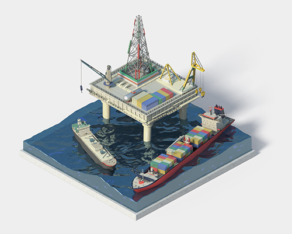

-
미래를 만들어 가는 기술이 있습니다
엔지니어링 플라스틱 원료, 유리장 섬유
-
풍요로운 삶울 위한 기술이 있습니다
친환경 수성페인트에서 첨단 선박, 자동차 페인트까지
-
첨단 소재로 내일을 앞당기는 기술
반도체와 전기전자 핵심재인 봉지재, 절연재
-
KCC Everywhere
단열성, 방음효과, 미려한 외관까지 PVC창호
KCC NEWS
RECRUIT
기술자료검색
MSDS/데이터시트/인증서/성적서 등
기술자료를 검색하실 수
있습니다.
BUSINESS AREAS
-

전자 가전 전기
-
KCC in Key Industrie
Electronic / Home Appliances전자/가전/전기
KCC의 기술력으로 가전제품 및 전기.전자 소재의 품격을
높이다.집 안 구석구석 손길과 눈길 닿는 곳 부터 보이지 않는 곳까지
어디서든 KCC의 기술력을 느낄 수 있습니다.
쉽게 긁히지 않는 냉장고 표면, 거친 진동에도 끄떡없는 세탁
기 부속품, TV.컴퓨터.냉장고 등 전자기기 내부에 있는 소재
등 KCC 제품으로 완성할 수 있습니다.
-

자동차
-
KCC in Key Industrie
Automobile자동차
자동차 내부의 고급스러움과 고품격 외관을 완성하다.
자동차의 외관은 외부 환경에 직접적으로 노출되기 때문에
KCC의 다양한 제품들은 자동차의 고품격 외관을 결정짓는데
주요한 역활을 합니다.
자동차 부품 곳곳에 KCC의 다양한 제품이 적용되어 기능성을
높이고 차량내부의 고급스러운 분위기를 연출하는데 큰 역활
을 하고 있습니다.
-

선박 해양플랜트
-
KCC in Key Industrie
Ships / Marine plant선박 해양플랜트
산업용 특수 환경에 적합한 제품으로 혹독한 환경에 노출되는
선박해양구조물을 보호합니다.녹이 생기는 것을 방지하는 방청도료와 해수 및 마찰 저항을
낮춰 연료비를 절감해주는 방오도료, 화재 확산을 방지하는
보온단열재까지 KCC제품을 다양하게 적용하고 있습니다. -

플랜트
-
KCC in Key Industrie
Plant플랜트
극한 부식 환경으로부터 플랜트 설비를 보호하다.
플랜트 시장에 적용되는 KCC 도료는 강교, 발전, 석유화학 산
업에 적용되는 수많은 시설물의 부식방지 유지관리 및 성능향
상을 위한 필수 자재입니다.
또한 내화도료는 화재로부터 철골 구조물을 보호합니다.
-

건축
-
KCC in Key Industrie
Construction건축
KCC의 기술력! 친환경적이고 세련된 실내 공간을 만들다.
최근 건축물의 트렌드는 자연 친화적이면서 세련된 디자인에
초첨을 맞춘 건축자재의 고급화입니다.
삶의 질이 향상되고 생활공간에 대한 인식이 변화하면서 나타
난 현상입니다.
거주자의 건강에 무해하며 고급스러운 외관을 자랑하는 KCC
건축용 제품을 살펴 봅시다.
-
Other
-
KCC in Key Industrie
Other산업 기타
기계 설비 내구성을 높이는 KCC의 기술력, 일상속에 스며든
KCC기계 설비 내구성을 높이는 KCC의 기술력,
일상속에 스며든 KCC산업 현장에서 찾아볼 수 있는 KCC의 제품들은 기계 설비에
적용되는 도료에서부터 소재까지 그 종류가 매우 다양합니다.
BRAND STORY

마음껏 뛰어 놀아도 되는 안심 안전 #놀이터 #KCC #장섬유 가 숨어있어요~👶
2021.07.22

KCC 숲으로 셀프로 오래된 원목 장난감을 바꿔보세요!
2021.07.27
디지털광고

빛바래고 칙칙한 건 못 참는 컬러레인저스 출동!
2021.04
KCC Webzine

<2021년 9월호>
2021.09